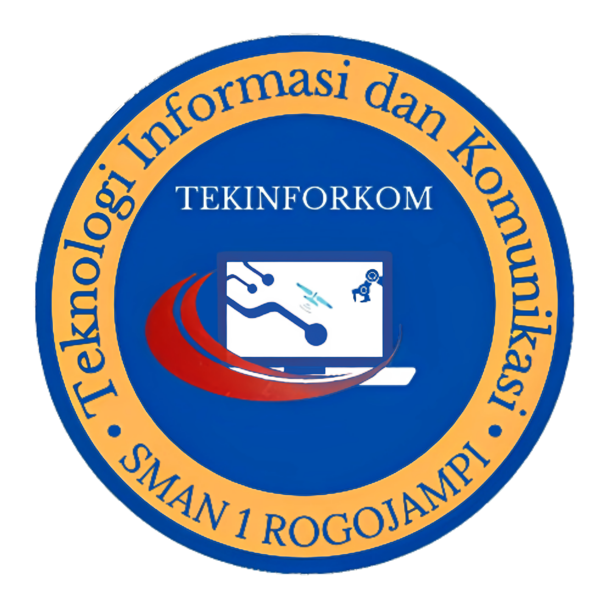

Tekinforkom adalah salah satu ekstrakurikuler SMAN 1 ROGOJAMPI TARUNA BUDAYA yang berdiri pada tahun 2020
Tekinforkom sendiri merupakan kepanjangan dari Teknologi Informasi dan Komunikasi Yang memiliki arti bahwa, Tekinforkom adalah Ekstrakurikuler yang berfokus pada Ilmu Teknologi seperti komputer, robot dan lain sebagainya.
Membentuk siswa - siswi yang mampu mengoperasikan teknologi dengan tetap menjunjung karakter berakhlak mulia, cerdas, kreatif dan berinovatif.
Ikut serta memberikan kontribusi kepada sekolah dan ekstrakurikuler, meningkatkan kreativitas dan inovasi siswa, Mengikuti kompetisi regional, nasional, hingga internasional.
Tujuan Tekinforkom dibuat yaitu, untuk menyampaikan dan memberikan ilmu seputar Teknologi seperti komputer, kamera, robotika agar Siswa - Siswi SMAN 1 ROGOJAMPI TARUNA BUDAYA dapat mengoperasikan atau menjalankan teknologi dan juga memberikan pemahaman secara menyeluruh tentang dunia Teknologi.
Tekinforkom sendiri memiliki 2 Divisi atau materi wajib, salah satunya seperti Pemrograman yang berfokus melatih fundamental dan pemahaman developing, mengembangkan output aplikasi. Yang kedua adalah Multimedia yang berfokus ada teknik kamera exposure, editing, desain grafis dan lain sebagainya.
Sama seperti visi dan misi, terbentuknya Tekinforkom adalah sebagai salah satu pendukung kemajuan pendidikan teknologi SMAN 1 ROGOJAMPI TARUNA BUDAYA agar siswa - siswi juga mendapat ilmu tentang teknologi yang tak hanya menguasai kebudayaan namun juga teknologi, ekstrakurikuler ini juga dapat membantu segala hal urusan tentang teknologi SMAN 1 ROGOJAMPI TARUNA BUDAYA